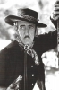

Country:United States, 53 minutes
Spoken languages:English
Genres:Action, Western
Director(s):Harry L. Fraser
Writer(s):Harry L. Fraser
Video Codec:Unknown
Number: 183


Certification:
Storyline:
Bandits lead by Matt the Mute enter a bar and kill multiple people. Randy Bowers comes to town and is framed by Matt the Mute, who is working with the sheriff (who doesn't know Matt is really a criminal). Randy escapes with the help of the niece of the dead owner of the bar. Bowers ends up running from the sheriff, and ends up in the cave in which the bandits have their hide-out…
Cast: 


Medium: VHS tape,
Comments: Part of: John Wayne Western Collection Volume I
Loaned: No
Aspect ratio: Unknown